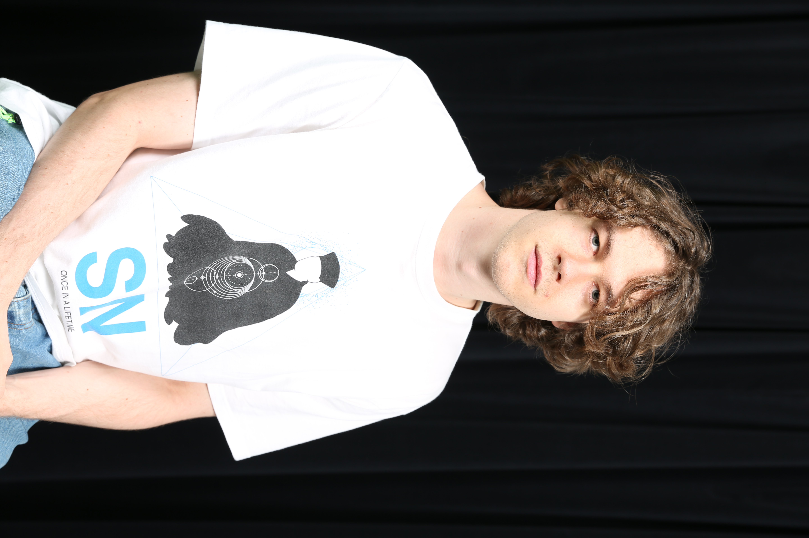
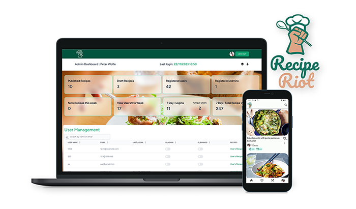

Recipe Riot
Members


About Recipe Riot
RecipeRiot is an online food recipe application. The application allows users to view recipes and add them to favorites, create and edit recipes, search for recipes as well as administer all their user profile settings. Simple to use, reliable and accessible! It consists of a front-end mobile application supported by a Laravel API backend. It provides a full user and admin dashboard to complement the mobile application. The front-end application is written in Dart/Flutter and makes use of packages including but not limited to dio, hive, go_router and riverpod. The backend API and Dashboard is written in PHP using Laravel 10 framework and utilizes Tailwind CSS, Vite and Livewire3 , leveraging a MySQL database.
